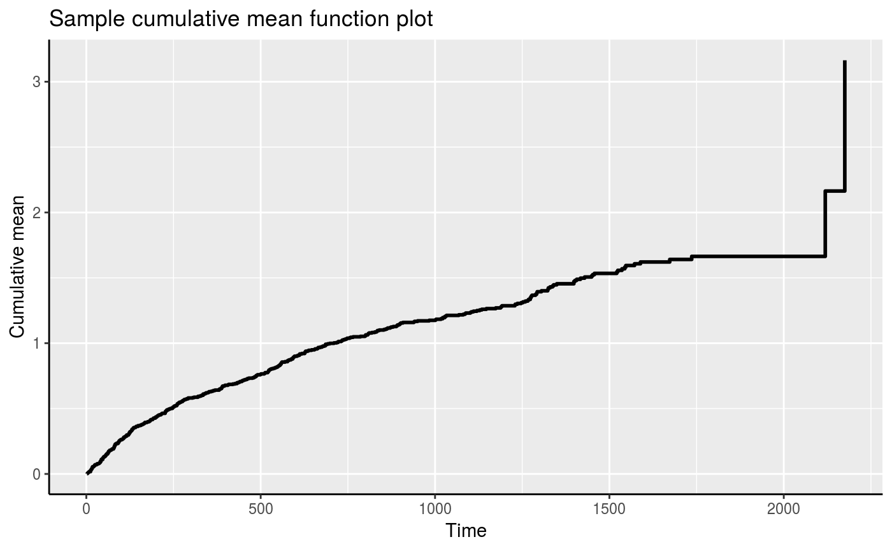
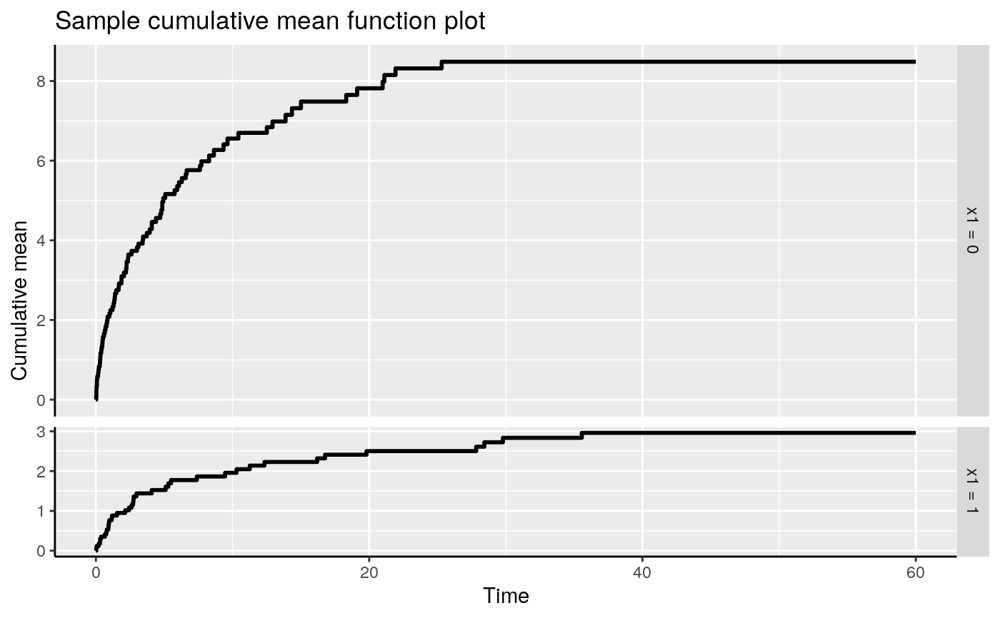

Plot the cumulative sample mean function (CSM) for an Recur object.
The usage of the function is similar to that of plot.Recur but with more flexible options.
plotCSM(formula, data, onePanel = FALSE, adjrisk = TRUE, smooth = FALSE, control = list(), ...)
Arguments
| formula | a formula object, with the response on the left of a "~" operator, and the predictors on the right.
The response must be a recurrent event survival object returned by the |
|---|---|
| data | an optional data frame in which to interpret the variables occurring in the " |
| onePanel | an optional logical value indicating whether the cumulative sample means (CSM) will be plotted in the same panel. This is only useful when there are multiple recurrent event types or in the presese of (discrete) covariates. |
| adjrisk | an optional logical value indicating whether risk set will be adjusted,
e.g., if |
| smooth | an optional logical value indicating whether to add a smooth curve obtained from a monotone increasing P-splines implemented in package |
| control | a list of control parameters. |
| ... | graphical parameters to be passed to methods.
These include |
Value
A ggplot object.
Details
When adjrisk = TRUE, the plotCSM is equivalent to
the Nelson-Aalen estimator for the intensity function of the recurrent event process.
When adjrisk = FALSE, the plotCSM does not adjust for the risk set and
assumes all subjects remain at risk after the last observed recurrent event.
This is known as the survivor rate function.
The argument control consists of options with argument defaults
to a list with the following values:
- xlab
customizable x-label, default value is "Time".
- ylab
customizable y-label, default value is "Cumulative mean".
- main
customizable title, default value is "Sample cumulative mean function plot".
The xlab, ylab and main parameters can also be passed down without specifying a control list.
See also
Examples
set.seed(1) dat <- simSC(30, c(-1, 1), c(-1, 1)) plotCSM(Recur(Time, id, event, status) ~ 1, data = dat)